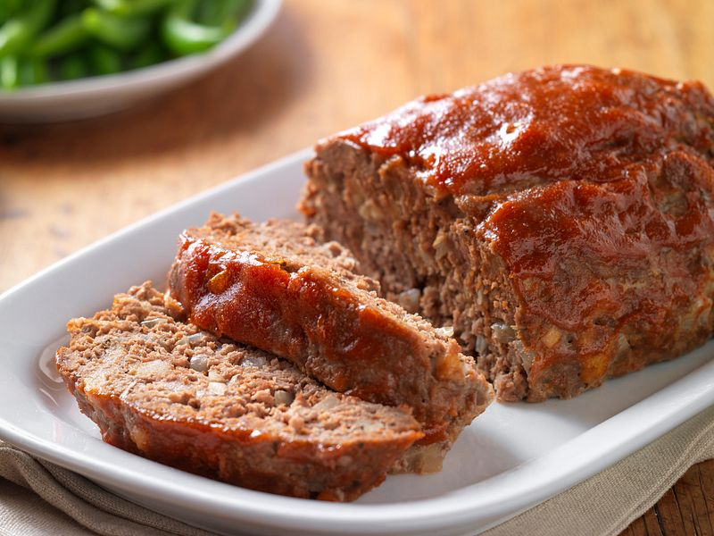

Meatloaf

Description
This easy gluten-free meatloaf can be made with the meat of your choice. We prefer turkey or Beyond Beef to keep it lean!
Ingredients
- 1 lb. meat (turkey, plant-based substitute, etc.)
- 1/2 cup gluten-free breadcrumbs
- 1 egg
- 1/4 cup plus 2 tablespoons ketchup, divided
- 1/4 cup minced onion
- 1 teaspoon salt
Steps
- Preheat oven to 400 F. Line a standard loaf pan with aluminum foil and spray lightly with cooking oil.
- Place the meat, breadcrumbs, 1/4 cup ketchup, salt, onion, and egg in a large mixing bowl. Mix with hands until well combined.
- Place the mixture in the loaf pan, press it into the corners, and smooth the top.
- Spread the remaining ketchuip evenly on top of the loaf.
- Bake for 40 mins.
- Remove from oven. Let rest for 5 minutes before slicing to serve.